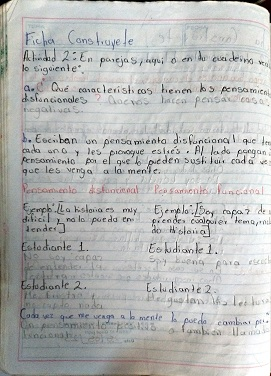

La utilización de libretas reutilizadas:
Los profesores de nuestras materias se dieron cuenta de que en nuestros semestres pasados no ocupamos toda la libreta así que propusieron que los alumnos reutilicemos nuestras libretas de los semestres pasados esto con la finalidad de aportan un granito de arena y no contaminar
